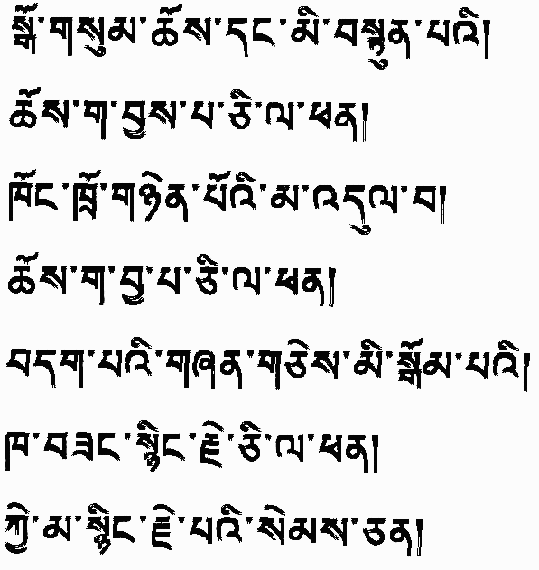

|
Without attuning body, speech and mind into the Doctrine? What gain is it to celebrate religious rites? If anger be unconquered by its antidote? What gain is it to celebrate religious rites? Unless one meditate on loving others more than self, What gain is it merely from the lips to say, Oh pity sentient creatures? (1052-1135 AD) |
sgo gsum chos dang mi bstun pa'i/ Chos ga byas pa ci la phan/ khong khro gnyen po'i ma 'dul ba/ Chos ga bya pa ci la phan/ bdag pa'i gzhan gces mi bsgom pa'i/ Kha bzang snying rje ci la phan/ ke ma snying rje pa'i sems can/ |
Back to the top.
Return to Tibetan Images
Translation into Tibetan language, typing in script, and developing transliteration by Nawang Thokmey, University of Virginia Library
Webber -
Philip McEldowney
Last Update -
Count -